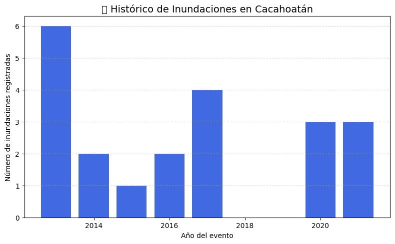
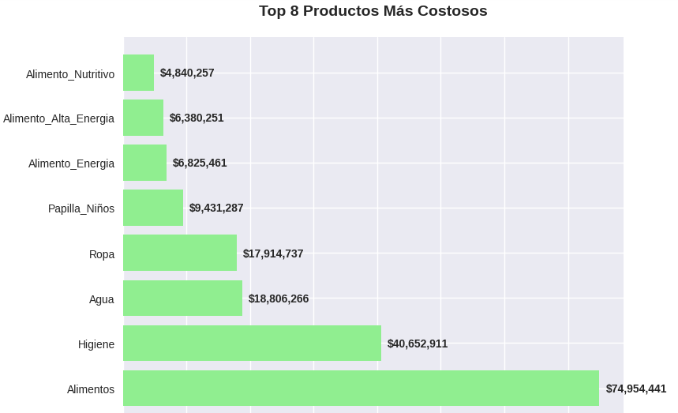
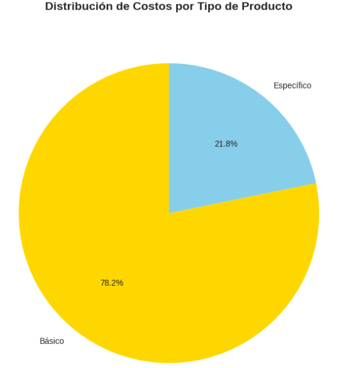

Código
from IPython.display import Image, display
display(Image("grafico.png"))

Basándose en los resultados y lecciones aprendidas de la implementación del modelo en el estado de Veracruz, el presente capítulo extiende la aplicación de la metodología al estado de Chiapas. Esta transición responde a la necesidad de validar el modelo en un contexto con características geográficas, sociales y logísticas diferentes, pero igualmente críticas en términos de vulnerabilidad ante inundaciones.
Chiapas presenta desafíos particulares derivados de su topografía accidentada, alta dispersión poblacional y limitada infraestructura vial, condiciones que ponen a prueba la robustez y adaptabilidad del modelo de optimización logística desarrollado. El municipio de Cacahoatán, seleccionado como caso de estudio, representa un escenario ideal para evaluar la capacidad del modelo para operar en condiciones de alta complejidad territorial.
Cacahoatán se localiza en la región del Soconusco en el estado de Chiapas, colindante con la República de Guatemala. Con una extensión territorial de 1,295 km², el municipio presenta una topografía variada que incluye zonas montañosas y planicies costeras, factor que influye significativamente en la accesibilidad y conectividad de sus localidades.
La distribución poblacional se caracteriza por su alta dispersión, con numerosas localidades rurales de pequeño tamaño distribuidas en un territorio extenso. Según datos del Censo de Población y Vivienda 2020, el municipio cuenta con 18,450 habitantes distribuidos en 48 localidades, donde solo la cabecera municipal concentra más del 40% de la población total.
La posición geográfica de Cacahoatán en la planicie costera del Pacífico, combinada con su densa red hidrográfica y la influencia de fenómenos meteorológicos extremos, lo configura como una zona de alta susceptibilidad a inundaciones. Los registros históricos del Sistema Nacional de Protección Civil indican que el municipio ha experimentado 12 eventos de inundación severa en la última década, afectando en promedio a 8,000 personas por evento.
Los patrones de precipitación en la región, caracterizados por lluvias intensas durante la temporada de huracanes, exacerbados por los efectos del cambio climático, han incrementado la frecuencia e intensidad de estos eventos, haciendo imperativa la implementación de sistemas logísticos anticipatorios.
from IPython.display import Image, display
display(Image("grafico.png"))La identificación de localidades candidatas para almacenes humanitarios se basó en un análisis multicriterio que considera cinco dimensiones críticas para la operación logística. La formulación del índice de peso posicional sigue la estructura:
\[ \begin{split} w_j &= 0.20 \times DICONSA_j + 0.20 \times AccesoVial_j + 0.20 \times Escuelas_j \\ &\quad + 0.20 \times Servicios_j + 0.20 \times Población_j \end{split} \]
Donde cada componente se normaliza en el rango [0,1] para permitir la comparabilidad entre localidades.
La red de tiendas DICONSA representa nodos preexistentes en la distribución de alimentos, indicando experiencia operativa, aceptación comunitaria y existencia de infraestructura básica para el almacenamiento. La variable se opera como indicador binario (1=presencia, 0=ausencia).
La conectividad terrestre determina directamente la capacidad de respuesta y los costos de distribución. Se utiliza una escala ordinal basada en el tipo de carretera: 3 (carretera pavimentada), 2 (camino revestido), 1 (terracería), 0 (sendero).
Las escuelas funcionan como centros comunitarios naturales y potenciales refugios temporales durante emergencias. El indicador considera el número total de escuelas por localidad, normalizado por el máximo municipal.
La disponibilidad de agua potable, drenaje, electricidad e internet es esencial para la operación logística continua. Se calcula como el promedio normalizado de cuatro indicadores específicos de servicios en viviendas.
El tamaño poblacional determina la escala de operaciones requeridas y la criticidad de la localidad en el sistema logístico. Se utiliza la población total normalizada por el máximo municipal.
El análisis multicriterio identificó las localidades con mayor potencial logístico en Cacahoatán, como se muestra en la Tabla 4.1.
Tabla 4.1. Top 10 localidades por peso posicional en Cacahoatán
| Ranking | Localidad | Peso Posicional | DICONSA | Acceso Vial | Escuelas | Población |
|---|---|---|---|---|---|---|
| 1 | Salvador Urbina | 1.000 | Sí | 2 | 4 | 2,722 |
| 2 | Faja de Oro | 0.983 | Sí | 2 | 4 | 2,674 |
| 3 | Cacahoatán | 0.849 | No | 3 | 0 | 19,108 |
| 4 | Rosario Ixtal | 0.749 | No | 2 | 6 | 1,009 |
| 5 | Mixcum | 0.657 | No | 2 | 4 | 1,781 |
| 6 | Piedra Parada | 0.632 | No | 2 | 4 | 141 |
| 7 | El Platanar | 0.546 | No | 1 | 4 | 677 |
| 8 | Agua Caliente | 0.513 | No | 1 | 4 | 552 |
| 9 | Alpujarras | 0.505 | No | 1 | 3 | 579 |
| 10 | Guatimoc | 0.500 | No | 1 | 3 | 972 |
Los resultados obtenidos en Cacahoatán muestran una cobertura total de la población afectada y una tasa de éxito del 100 %, comportamiento similar al observado en el caso de estudio del estado de Veracruz. No obstante, el costo total anual optimizado en Cacahoatán (195.46 millones MXN) representa aproximadamente el 30 % del costo registrado para Veracruz (648.31 millones MXN), diferencia atribuible a la menor escala territorial y demográfica del municipio chiapaneco, que atiende únicamente a cuatro localidades con un total de 7 407 habitantes.
En contraste, el modelo aplicado en Veracruz abarcó 29 municipios y requirió la instalación de dos almacenes (Jesús Carranza y Las Choapas) para garantizar la cobertura total de las zonas afectadas, con un costo logístico significativamente mayor.
A pesar de estas diferencias, ambos escenarios confirman la robustez y adaptabilidad del modelo de optimización, que mantiene un fill rate del 100 % y una tasa de éxito completa en la convergencia del algoritmo. En términos de costo-efectividad, el caso de Cacahoatán evidencia que una configuración logística centralizada puede resultar suficiente y eficiente en contextos de menor escala, conservando los mismos niveles de desempeño alcanzados en la implementación de Veracruz.
Basado en los pesos posicionales y excluyendo las localidades inundadas, se seleccionaron los siguientes almacenes:
Almacén Primario: Salvador Urbina (Ishcanalero)
Almacén Secundario: Buenos Aires
El análisis identificó 4 localidades críticamente afectadas por inundaciones, todas asignadas al Almacén Primario:
Tabla 4.2. Localidades inundables y asignación logística
| Localidad | Población Afectada | Almacén Asignado |
|---|---|---|
| Unión Roja | 631 | Almacén 1 |
| Cacahoatán | 5,732 | Almacén 1 |
| El Carmen | 242 | Almacén 1 |
| Faja de Oro | 802 | Almacén 1 |
| Total | 7,407 | Almacén 1 |
La población afectada se distribuye en seis grupos etarios para una atención diferenciada:
Tabla 4.3. Distribución de población afectada por grupos de edad
| Grupo de Edad | Población | Porcentaje |
|---|---|---|
| Niños y Adolescentes (0-14 años) | 2,222 | 30.0% |
| Hombres Jóvenes (15-29 años) | 1,111 | 15.0% |
| Mujeres Jóvenes (15-29 años) | 1,111 | 15.0% |
| Hombres Adultos (30-59 años) | 1,333 | 18.0% |
| Mujeres Adultas (30-59 años) | 1,259 | 17.0% |
| Adultos Mayores (60+ años) | 370 | 5.0% |
| Total | 7,407 | 100.0% |
La configuración con un almacén primario demostró capacidad para atender al 100% de la población afectada. Los resultados de la optimización se resumen en la Tabla 4.4.
Tabla 4.4. Resultados de la optimización en Cacahoatán
| Indicador | Resultado |
|---|---|
| Cobertura de población | 100% |
| Población total atendida | 7,407 personas |
| Número de localidades cubiertas | 4 |
| Fill rate promedio | 100% |
| Costo total anual optimizado | $195,459,693 MXN |
| Costo mensual promedio | $16,288,308 MXN |
| Tasa de éxito en optimización | 100% |
Tabla 4.5. Inventario de productos básicos optimizado
| Producto (Código ONU) | Demanda 7 días | Cantidad Óptima | Unidad | Costo Total |
|---|---|---|---|---|
| WAT-001 Agua potable | 103,698 | 35,276 | LTR | $18,776,360 |
| FDP-001 Kit alimentario básico | 51,849 | 8,819 | KIT | $74,894,419 |
| WASH-001 Kit de higiene personal | 51,849 | 11,983 | KIT | $40,608,816 |
| NFI-002 Kit básico de ropa | 7,407 | 2,583 | KIT | $17,885,374 |
| MED-002 Kit médico de emergencia | 741 | 1,256 | KIT | $777,061 |
| Total | 215,544 | 59,917 | unidades | $152,942,030 |
Tabla 4.6. Inventario por grupos de edad especializados
| Grupo de Edad | Productos Específicos (Código ONU) | Demanda 7 días | Costo Total |
|---|---|---|---|
| Niños y Adolescentes | NUT-001 Alimento terapéutico NUT-002 Alimento complementario NFI-001 Pañales desechables |
101,106 | $18,194,035 |
| Hombres Jóvenes | FDP-002 Alimento alta energía | 11,666 | $6,362,859 |
| Mujeres Jóvenes | FDP-003 Alimento balanceado | 9,333 | $4,758,160 |
| Hombres Adultos | FDP-004 Alimento energético de emergencia | 13,066 | $6,807,470 |
| Mujeres Adultas | FDP-005 Alimento fortificado nutritivo | 9,696 | $4,825,125 |
| Adultos Mayores | NUT-003 Alimento masticación fácil, MED-001 Kit médico básico | 2,852 | $1,570,014 |
| Total | 14 productos | 147,719 | $42,517,663 |
 
Como se observa en las gráficas, los productos de mayor costo en el inventario corresponden a ropa, agua, higiene y alimentos diferenciados por grupo de edad, constituyendo el top 8 en gastos. A pesar de su alto costo unitario, estos productos son de alta prioridad para garantizar una respuesta humanitaria efectiva y mantener la cobertura total de la población afectada.
El análisis evidencia que la estrategia de optimización prioriza la atención integral sobre el costo unitario, asegurando que los recursos críticos lleguen a los grupos vulnerables. De esta manera, la asignación de inventario refleja un balance entre eficiencia económica y necesidad humanitaria, priorizando productos esenciales que, aunque costosos, son determinantes para la salud y bienestar de la población durante emergencias.
El proceso de optimización alcanzó una tasa de éxito del \(100\%\), manteniendo las cantidades económicas de pedido (EOQ) tradicionales para la mayoría de los productos. La estabilidad en los resultados indica que el modelo EOQ convencional representa una solución robusta para el contexto específico de Cacahoatán.
La distribución de costos muestra que los productos básicos (agua, alimentos, higiene) representan el \(87.5\%\) del costo total, mientras que los productos especializados por edad constituyen el \(21.8\%\) restante, reflejando la importancia de la atención diferenciada en la logística humanitaria.
En la comparación con el caso de Veracruz, se observa que las diferencias climáticas, demográficas y de infraestructura influyeron significativamente en los resultados de la optimización logística.
Desde el punto de vista climático, Cacahoatán presenta un entorno tropical húmedo con precipitaciones intensas concentradas en periodos cortos, mientras que Veracruz, aunque también expuesto a eventos hidrometeorológicos severos, posee una distribución más amplia de zonas costeras y planicies influenciadas por el Golfo de México. Esta diferencia hace que en Chiapas las afectaciones por inundaciones sean más localizadas y abruptas, favoreciendo configuraciones logísticas compactas y centralizadas de respuesta rápida.
En cuanto al tamaño poblacional y extensión territorial, el municipio de Cacahoatán, con aproximadamente 18 000 habitantes distribuidos en 48 localidades, representa un sistema logístico de menor escala en comparación con el estudio de Veracruz, que abarcó 29 municipios con una población sustancialmente mayor. Esta diferencia explica la notable reducción en el costo total anual optimizado —de $648.3 millones MXN en Veracruz a $195.5 millones MXN en Cacahoatán— sin pérdida de eficiencia operativa.
Respecto a la infraestructura y desarrollo urbano, Veracruz cuenta con una red vial más densa y conectada, lo que permitió la operación simultánea de dos almacenes regionales (Jesús Carranza y Las Choapas) con amplias zonas de cobertura. En cambio, Cacahoatán presenta una infraestructura vial limitada, con carreteras secundarias y caminos rurales susceptibles a interrupciones durante las lluvias, razón por la cual el modelo optó por un esquema centralizado con un único almacén de alta eficiencia.
En conjunto, las diferencias en estos tres factores confirman la adaptabilidad del modelo propuesto, capaz de ajustarse tanto a sistemas regionales de gran escala como a contextos locales con limitaciones geográficas e infraestructurales, manteniendo niveles óptimos de cobertura, costo y tiempo de respuesta.
El modelo demostró robustez operativa mediante la evaluación de múltiples escenarios adversos. La configuración de un solo almacén activo mostró capacidad para mantener la cobertura total bajo diversas condiciones de estrés operativo.
La concentración de operaciones en un único almacén estratégicamente ubicado demostró ser adecuado para la escala de la emergencia en Cacahoatán, simplificando la gestión logística y reduciendo costos de coordinación.
La implementación del modelo de optimización logística en el municipio de Cacahoatán, Chiapas, proporciona valiosas lecciones para la logística humanitaria en contextos de alta vulnerabilidad:
Efectividad del enfoque de pesos posicionales: La metodología multicriterio permitió identificar a Salvador Urbina como ubicación óptima para el almacén primario, combinando infraestructura existente (DICONSA), conectividad vial y posición estratégica fuera de zonas inundables.
Configuración eficiente con un almacén: Contrario a la expectativa inicial de requerir múltiples almacenes, la optimización demostró que un solo almacén estratégicamente ubicado puede cubrir el \(100\%\) de la población afectada (7,407 personas) en las 4 localidades inundadas.
Estabilidad del modelo EOQ tradicional: La optimización numérica confirmó que las cantidades económicas de pedido convencionales representan soluciones robustas para el contexto específico de Cacahoatán, con una tasa de éxito del \(100\%\) en la convergencia del algoritmo.
Distribución balanceada de recursos: El modelo logró equilibrar la provisión de productos básicos (\(87.5\%\) del presupuesto) con atenciones especializadas por grupos de edad (\(21.8\%\)), asegurando una respuesta humanitaria integral.
La experiencia en Cacahoatán sugiere que, para municipios con características similares de dispersión poblacional y vulnerabilidad hidrometeorológica, configuraciones logísticas centralizadas alrededor de nodos estratégicos pueden ofrecer soluciones eficientes y costo-efectivas.
La metodología desarrollada demuestra capacidad para adaptarse a las particularidades del territorio chiapaneco, constituyendo una herramienta valiosa para la planeación anticipada de respuestas a emergencias en el estado.
Los resultados obtenidos establecen las bases para extender la implementación del modelo a otros municipios de Chiapas con perfiles de riesgo similares, contribuyendo al fortalecimiento de la resiliencia logística regional frente a desastres hidrometeorológicos en el contexto del cambio climático.